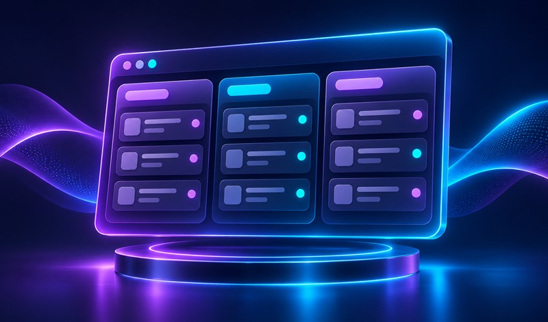

API REST
Go Task API
API de gerenciamento de tarefas com operações de criação, consulta, edição e exclusão. Inclui autenticação JWT, hash de senhas e persistência de dados.
Olá, eu sou Marcos José
Desenvolvo aplicações web e APIs REST. Ensino programação e desenvolvimento de jogos digitais na rede estadual do Piauí.
Ferramentas que uso para desenvolver interfaces, APIs e aplicações com banco de dados.
Git · GitHub · JWT
De uma API de tarefas a uma aplicação para gerenciar vendas, parcelas e pagamentos.
API REST
API de gerenciamento de tarefas com operações de criação, consulta, edição e exclusão. Inclui autenticação JWT, hash de senhas e persistência de dados.

Aplicação web
Aplicação web para cadastrar e editar projetos, com interface em React integrada a uma API REST.
Gestão de vendas e pagamentos
Sistema com autenticação e painel administrativo para gerenciar clientes, produtos, vendas, parcelas e pagamentos.
Em desenvolvimento
Nova arquitetura para o sistema de gestão, com foco em segurança, desempenho e controle de acesso.
Criação de interfaces em React integradas a APIs REST para cadastro de projetos e gestão de vendas e pagamentos.
Desenvolvimento de APIs REST em Go com autenticação JWT e persistência em PostgreSQL. Backend do QuitaAí 2.0 em desenvolvimento com C# e ASP.NET Core.
Aulas na Educação Profissional e Tecnológica sobre lógica, pensamento computacional e criação de jogos 2D com Scratch e GDevelop.
Atendimento a usuários, diagnóstico de problemas operacionais, instalação e configuração de sistemas de ponto de venda.
2025 – atual · SEDUC/PI
Planejo e ministro aulas na Educação Profissional e Tecnológica (EPT) sobre lógica de programação e criação de jogos 2D. Desenvolvo atividades de pensamento computacional, inteligência artificial e projetos integradores com ferramentas como Scratch e GDevelop.
Fev. de 2024 – abr. de 2024 · Ticbox Sistemas
Atendi usuários de sistemas de ponto de venda, diagnostiquei problemas operacionais, instalei e configurei sistemas e orientei clientes sobre seu uso.
Tecnólogo em Análise e Desenvolvimento de Sistemas
UNINASSAU · Concluído em 2026
Licenciatura em Computação
UFPI/CEAD · Concluída em 2026
Entre em contato para falar sobre projetos e oportunidades profissionais.